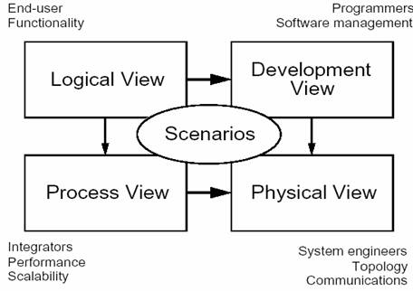

01 | 架构到底是指什么？
系统与子系统、模块与组件、框架与架构。
系统与子系统
以微信举例来说：
微信本身是一个系统，包含聊天、登录、支付、朋友圈等子系统。
- 朋友圈这个系统又包括动态、评论、点赞等子系统。
- 评论这个系统可能又包括防刷子系统、审核子系统、发布子系统、存储子系统。
- 评论审核子系统不再包含业务意义上的子系统，而是包括各个模块或者组件，这些模块或者组件本身也是另外一个维度上的系统。例如，MySQL、Redis 等是存储系统，但不是业务子系统。
模块与组件
从逻辑的角度来拆分系统后，得到的单元就是“模块”；从物理的角度来拆分系统后，得到的单元就是“组件”。划分模块的主要目的是职责分离；划分组件的主要目的是单元复用。
以一个最简单的网站系统来为例。假设我们要做一个学生信息管理系统，这个系统从逻辑的角度来拆分，可以分为“登录注册模块”“个人信息模块”“个人成绩模块”；从物理的角度来拆分，可以拆分为 Nginx、Web 服务器、MySQL。
框架与架构
框架关注的是“规范”，架构关注的是“结构”。
架构会根据角度的不同而产生不同的定义，这也是4+1视图的由来：

举例来说：
- 从业务逻辑的角度，“学生管理系统”的架构由登录注册模块、个人信息模块和个人成绩模块组成
- 从物理部署的角度，“学生管理系统”的架构由nginx，web服务器和mysql组成
- 从开发规范的角度，“学生管理系统”的架构由Model, View 和Controller组成
总结
首先，“系统是一群关联个体组成”，这些“个体”可以是“子系统”“模块”“组件”等；架构需要明确系统包含哪些“个体”。其次，系统中的个体需要“根据某种规则”运作，架构需要明确个体运作和协作的规则。
思考
原来对架构的理解完全由自己工作中的产品决定的，中型规模的产品，已经有了关于模块和组件的理解，也有了从业务逻辑和物理部署角度对于架构的认识。
现在产品越来越大，也在向SaaS和microservice转型，物理部署相较于业务逻辑，改动会更大一点，而且cloud提供了很多原来on prem无法提供的功能，比如serverless，或者redis。
以后的趋势也许会越来越倾向于：架构被外包给cloud provider，就像发型设计师一样，程序员和云平台的架构师沟通好，然后他们给出一套方案，直接用就行了。